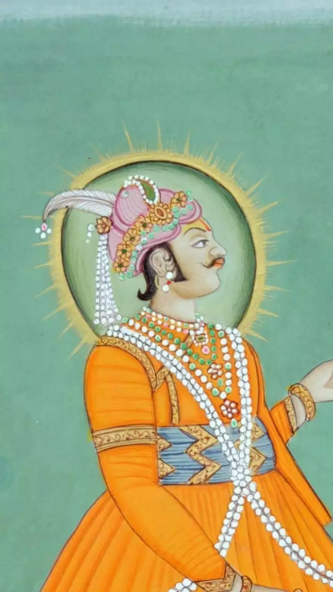

| Monument |
Built By |
Picture |
Year |
Place |
Purpose |
Notable Features |
| Taj Mahal |
Shah Jahan |
 |
1653 |
Agra, Uttar Pradesh |
Mausoleum |
White marble, symbol of love |
| Qutub Minar |
Qutb-ud-din Aibak |
 |
1193 |
Delhi |
Victory Tower |
Tallest brick minaret, intricate carvings |
| Red Fort |
Shah Jahan |
|
1648 |
Delhi |
Fort and Palace |
Massive red sandstone fort |
| India Gate |
Edwin Lutyens |
|
1931 |
Delhi |
War Memorial |
War memorial, eternal flame |
| Hawa Mahal |
Maharaja Sawai Pratap Singh |
 |
1799 |
Jaipur, Rajasthan |
Palace |
Five-story palace, intricate lattice work |
| Mysore Palace |
Krishnaraja Wodeyar IV |
|
1912 |
Mysore, Karnataka |
Royal Residence |
Grand palace, illuminated at night |
| Gateway of India |
George Wittet |
|
1924 |
Mumbai, Maharashtra |
Commemorative Arch |
Iconic archway, commemorative landmark |
| Ajanta Caves |
Various Buddhist Monks |
|
2nd century BC |
Aurangabad, Maharashtra |
Cave Temples |
Ancient Buddhist cave temples, murals |
| Victoria Memorial |
William Emerson |
 |
1921 |
Kolkata, West Bengal |
Memorial |
Memorial to Queen Victoria, museum |
| Sanchi Stupa |
Emperor Ashoka |
 |
3rd century BC |
Sanchi, Madhya Pradesh |
Buddhist Stupa |
Great stupa, ancient relics |
| Charminar |
Muhammad Quli Qutb Shah |
 |
1591 |
Hyderabad, Telangana |
Mosque and Monument |
Four minarets, mosque and monument |
| Meenakshi Temple |
King Kulasekara Pandya |
|
17th century |
Madurai, Tamil Nadu |
Hindu Temple |
Elaborate gopurams, vibrant sculptures |